library(tidyverse) # This loads ggplot2, which produces the graphs
library(scales) # This loads scales
library(openintro) # We use data from this package8 Graphing using ggplot2
The package ggplot2 offers the most consistent and flexible way to create graphs in R. We will focus on the basic graph types using examples. This is what we expect you to be able to do.
More detailed options can be found on the ggplot2 website and cheat sheet, but these are not exam material.
We also load the package scales which gives us some additional tools to override the default breaks, labels, transformations and palettes.
We load the necessary packages as follows:
8.1 General introduction to ggplot
Plots using ggplot 2 are designed in layers.
Every ggplot starts with the ggplot function, in which you define the dataset that is used and the main variables. For example in the graph below we define loan50 as the data . Next, we ‘map’ the variables that we are using using the aes function, which maps variables to elements of the graph. In the below example we indicate that we want to use variable total_income on the x-axis and loan_amount on the y-axis.
data(loan50) # This loads the dataset loan50 from openintro
ggplot(data = loan50,
mapping = aes(x = total_income, y = loan_amount))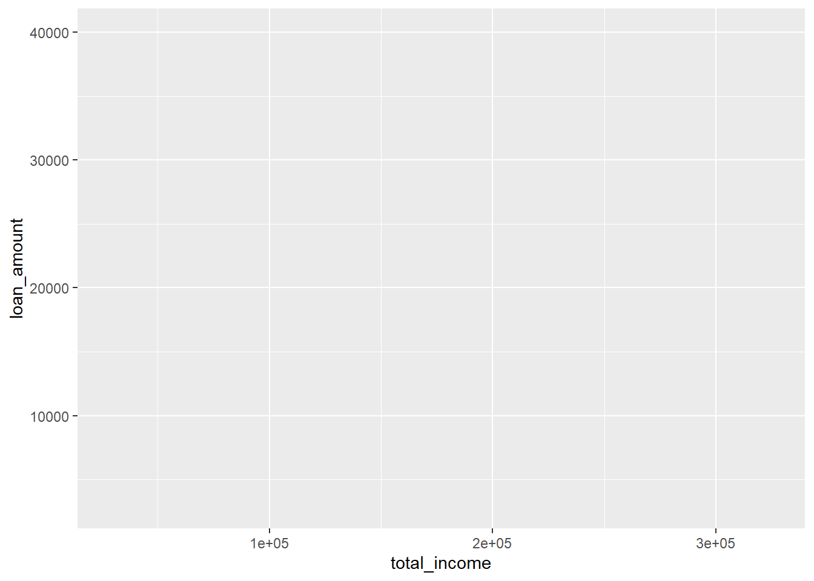
The above code produces an ‘empty’ graph, because we have not yet told R what kind of graph we would like to produce: perhaps a line graph, scatter plot or something else? We need to add a geom layer to the graph in order to produce points, lines or bars in the graph. Below we add points to the graph using geom_point(). Note that we also add a plus sign (+) after the second line, which ensures that we add the points to our graph:
ggplot(data = loan50,
mapping = aes(x = total_income, y = loan_amount)) +
geom_point()
We can also add additional layers to make the graph look differently, change labels or add further elements to the graph. You will find examples of this for each of the graph types below.
8.1.1 Saving a ggplot to a file
If you would like to use a graph in, for example, a Word document or Powerpoint, you can export the ggplot using the ggsave command. This saves the last plotted ggplot to a file:
ggplot(data = loan50,
mapping = aes(x = total_income, y = loan_amount)) +
geom_point()
ggsave(filename = "scatterplot_example.png",
width=7,
height=7)filename = "scatterplot_example.png"-
You need to give the file a name and an extension. In this example, the file name is set to
scatterplot_example.png. This creates a PNG file, which often works well if you want to use the graph in a text document or presentation. You can also create other file formats, such as ajpegorpdffile, by changing the extension, i.e.scatterplot_example.pdf. - width = 7
-
This provides the width of the graph in inches.
- height = 7
-
This provides the height of the graph in inches.
8.2 Scatterplot
A scatterplot provides an overview of each unique point for two numerical values. It is most useful when there are many unique values.
In the below example we plot total_income on the x-axis (horizontally) and loan_amount on the y-axis (vertically).
data(loan50) # This loads the dataset loan50 from openintro
ggplot(data = loan50,
mapping = aes(x = total_income, y = loan_amount)) +
geom_point()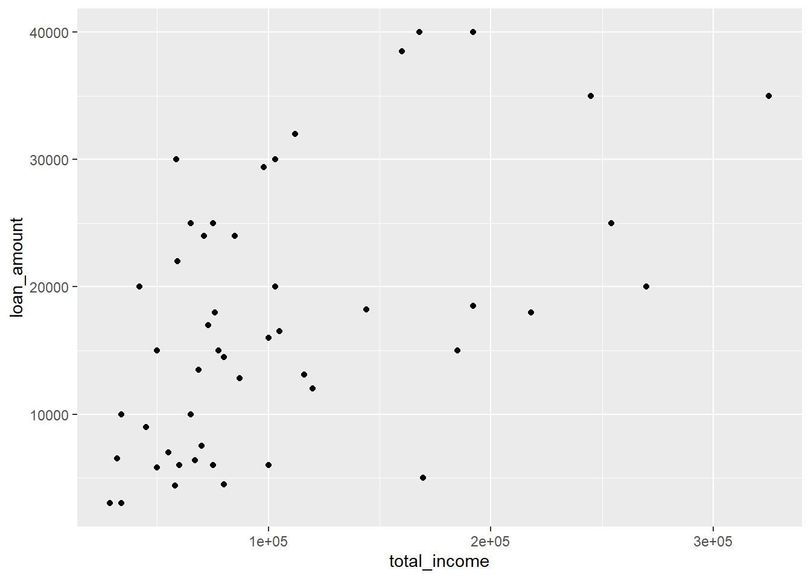
data = loan50-
This bit of code says that the data frame we are using is called
loan50. For your own graph, you would replaceloan50by the name of the data.frame you are using. mapping = aes(x = total_income, y = loan_amount)-
This part of the code says that
total_incomeis the variable we would like to display on the x axis andloan_amountis to be displayed on the y axis. For your own graph, you would thus replacetotal_incomeandloan_amountby your own variables. geom_point()-
This tells ggplot2 that we would like to create a scatterplot with points for the two variables. We do not require any extra arguments for a basic scatterplot.
8.2.1 Scatterplot: additional options
To make the scatterplot look somewhat nicer, we can add extra options. Note that to add options to a plot we simply use the + sign at the end of the line:
data(loan50)
ggplot(data = loan50,
mapping = aes(x = total_income, y = loan_amount)) +
geom_point(size=2, colour = "grey") +
labs(title = "Total income and loan amount",
x = "Total Income",
y = "Loan Amount") +
scale_x_continuous(labels=scales::label_dollar()) +
scale_y_continuous(labels=scales::label_dollar()) +
theme_minimal()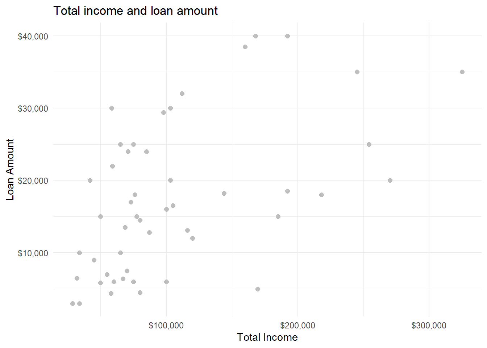
geom_point(size = 2, colour = "grey")-
These options allow us to set the size and the colour of the dots. Note that the colour name is a string and needs to be put in quotation marks: “grey”.
labs(title = "Title", x = "x axis title", y = "y axis title")-
This option adds nicer names for the title of the graph, and the titles of the x and y axis.
scale_x_continuous(labels=scales::label_dollar())-
This options and its ‘sister’
scale_y_continuouschange how the values and axes are presented. In this case we would like to display the values in dollars. This can be done withscales::label_dollar(). theme_minimal()-
In order to change the entire look of a graph, you can use the theme_* functions (where in place of star you can add various options, such as
theme_minimal(),theme_classic()ortheme_light().
8.2.2 Scatterplot: multiple groups
Sometimes you have different groups in your data that you would like to visualise. In this case you can modify the geom_point to change the colour or shape of the points by a group. In this example, the colour of the dot will indicate home ownership:
data(loan50)
ggplot(data = loan50,
mapping = aes(x = total_income, y = loan_amount)) +
geom_point(aes(colour = homeownership)) 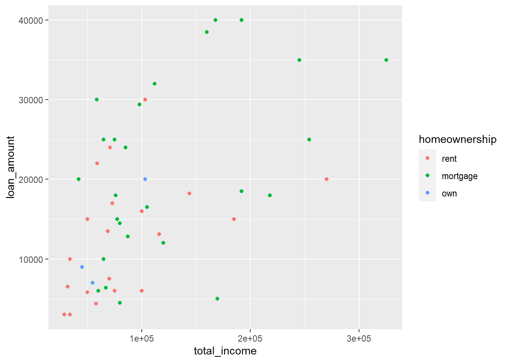
geom_point(aes(colour = homeownership))-
This indicates that the
colourof the points will vary byhomeownership(rent, mortgage, own). R will automatically choose acolourfor each group. For your own graph, you would change homeownership to your own grouping variable name. Note: don’t forget to putcolour = homeownershipinsideaes().
data(loan50)
ggplot(data = loan50,
mapping = aes(x = total_income, y = loan_amount)) +
geom_point(aes(shape = homeownership)) 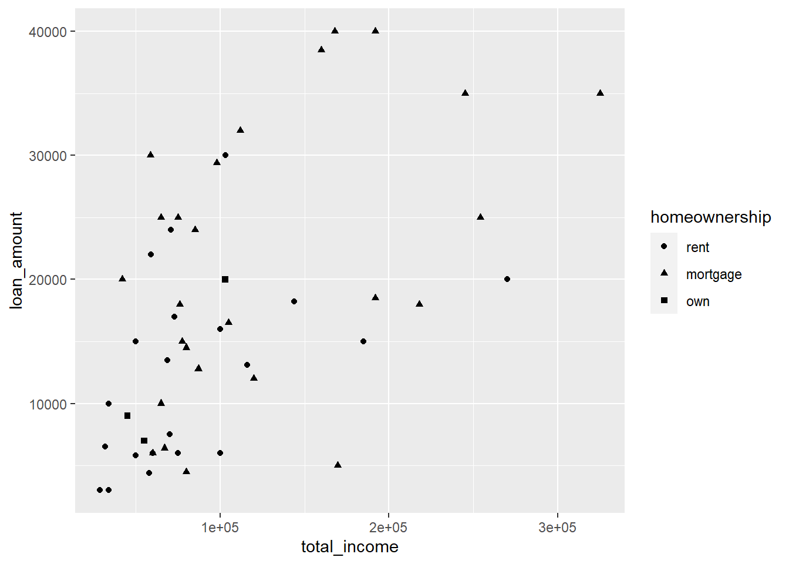
geom_point(aes(shape = homeownership))-
This indicates that the
shapeof the points will vary byhomeownership(rent, mortgage, own). R will automatically choose ashapefor each group. For your own graph, you would change homeownership to your own grouping variable name. Note: don’t forget to putshape = homeownershipinsideaes().
8.2.3 Scatterplot: separate graphs per group
Sometimes instead of using different colours or shapes for a group you would like to produce a separate graph for each group. These are called ‘facets’ and can be produced like this:
data(loan50)
ggplot(data = loan50,
mapping = aes(x = total_income, y = loan_amount)) +
geom_point() +
facet_wrap(vars(homeownership))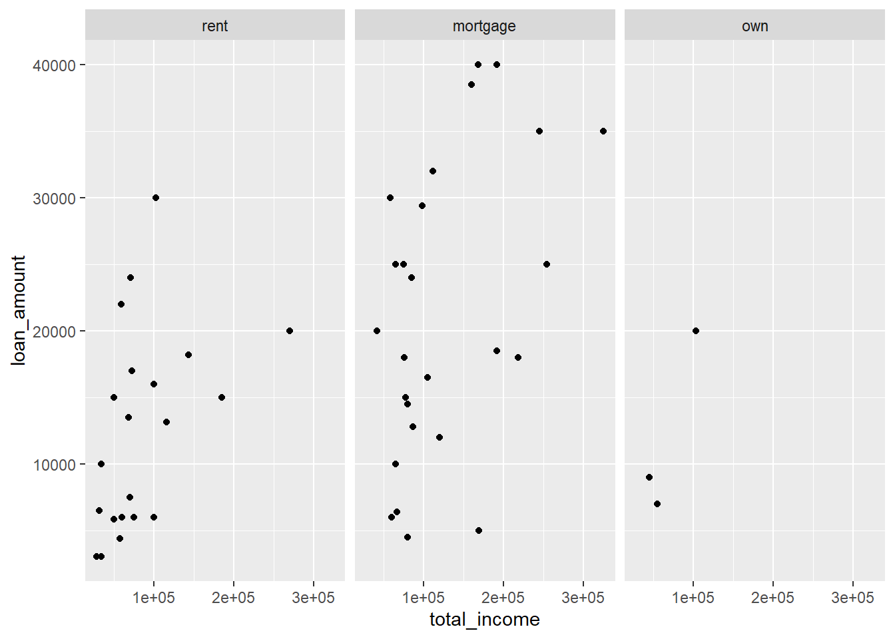
facet_wrap(vars(homeownership))-
This indicates that we would like to produce a separate ‘facet’ for each value of
homeownership(rent, mortgage, own). For your own graph, you would changehomeownershipto your own grouping variable name. Note: don’t forget to put the variable name withinvars(). There are additional options for the functionfacet_wrapto control how these are displayed, for example the number of rows (nrow) and columns (ncol).
8.3 Dot plot
A dot plot summarises the values for a single variable.
data(loan50)
ggplot(data = loan50,
mapping = aes(x = interest_rate)) +
geom_dotplot()Bin width defaults to 1/30 of the range of the data. Pick better value with
`binwidth`.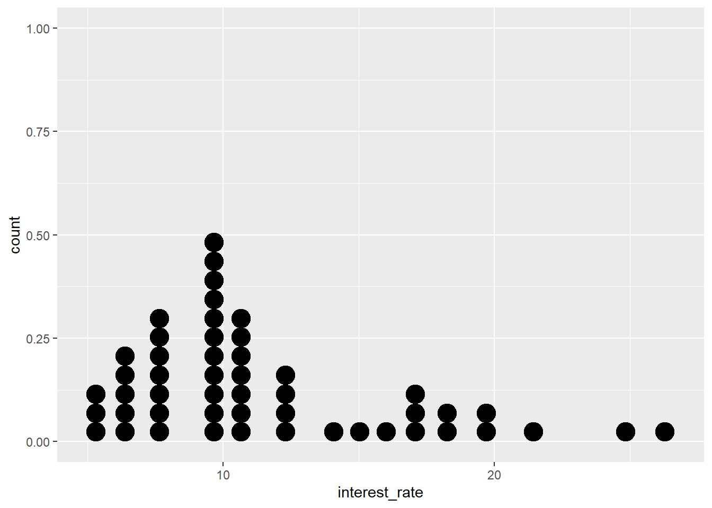
data = loan50-
This bit of code says that the data frame we are using is called
loan50. For your own graph, you would replaceloan50by the name of the data.frame you are using. mapping = aes(x = interest_rate)-
This part of the code says that
interest_rateis the variable we would like to display. For your own graph, you would thus replaceinterest_rateby your own variables. geom_dotplot()-
This tells ggplot2 that we would like to create a dotplot. We do not require additional options for a basic dot plot.
8.3.1 Dot plot: additional options
data(loan50)
ggplot(data = loan50,
mapping = aes(x = interest_rate)) +
geom_dotplot() +
labs(title = "Dot plot of interest rate",
x = "Interest rate",
y = "") +
scale_y_continuous(labels=NULL) +
scale_x_continuous(labels = scales::label_percent(scale=1),
breaks=seq(5,25,by=5)) +
theme_minimal()Bin width defaults to 1/30 of the range of the data. Pick better value with
`binwidth`.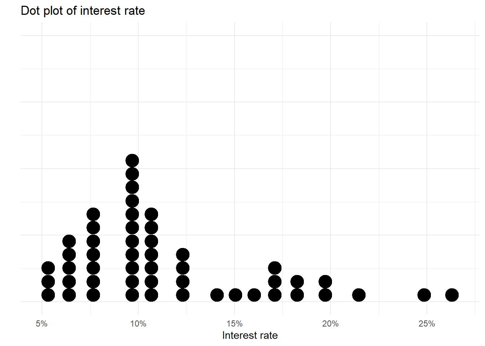
labs(title = "Title", x = "x axis title", y = "")-
This option adds nicer names for the title of the graph, and the titles of the x and y axis. In the example we remove the y axis title by setting it to nothing (
"") scale_x_continuous(labels = scales::label_percent(scale=1), breaks=seq(5,25,by=5)-
This option changes how the x-axis is presented. In this case we would like to display the values in percentages. This can be done with
scales::percent_format(). We also setbreaks=seq(5,25, by=5)to tell R that we would like to have x-axis values displayed at 5%, 10%, 15%, 20% and 25%. theme_minimal()-
In order to change the entire look of a graph, you can use the theme_* functions (where in place of star you can add various options, such as
theme_minimal(),theme_classic()ortheme_light().
8.4 Histogram
A histogram provide an overview of a numerical variable, by presenting the counts of (binned) values.
data(loan50)
ggplot(data = loan50,
mapping = aes(x = interest_rate)) +
geom_histogram()`stat_bin()` using `bins = 30`. Pick better value with `binwidth`.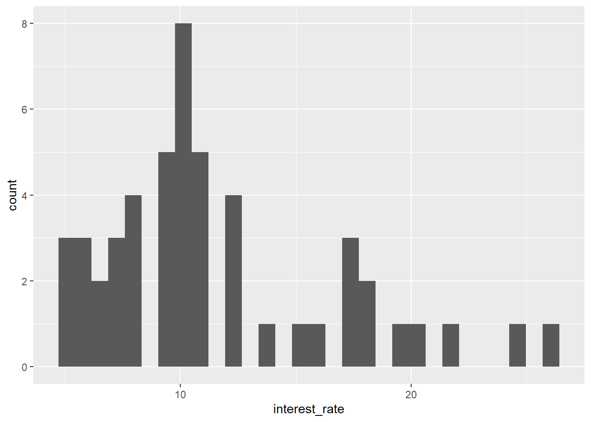
data = loan50-
This bit of code says that the data frame we are using is called
loan50. For your own graph, you would replaceloan50by the name of the data.frame you are using. mapping = aes(x = interest_rate)-
This part of the code says that
interest_rateis the variable we would like to display. For your own graph, you would thus replaceinterest_rateby your own variable. geom_histogram()-
This tells ggplot2 that we would like to create a histogram. This produces a basic histogram with 30 bins (see below for options that changes this default).
8.4.1 Histogram: controlling bin size
There are various options to control how the data of the variable is grouped: controlling the width of the bins, the number of bins or setting manual break points:
8.4.1.1 Width of the bins
data(loan50)
ggplot(data = loan50,
mapping = aes(x = interest_rate)) +
geom_histogram(binwidth = 2.5)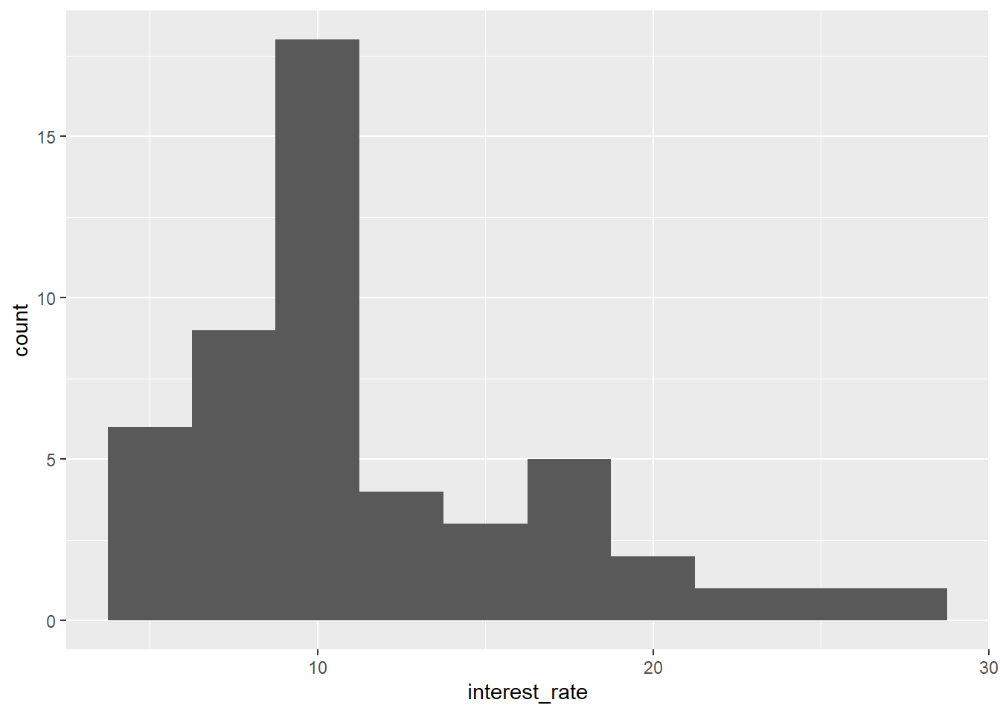
geom_histogram(binwidth = 2.5)-
The option binwidth sets the width of the bins, in this example to 2.5.
8.4.1.2 Number of bins
data(loan50)
ggplot(data = loan50,
mapping = aes(x = interest_rate)) +
geom_histogram(bins = 10)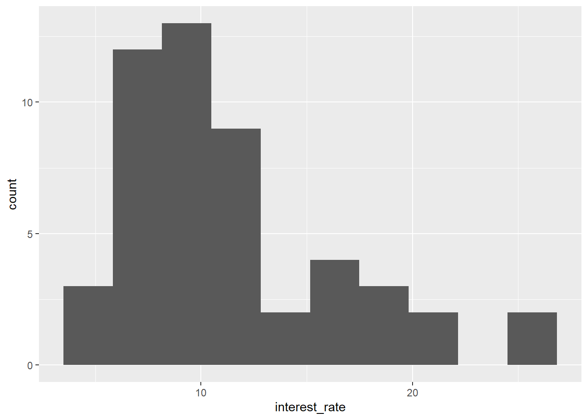
geom_histogram(bins = 10)-
The option bins sets the number of bins, in this example to 10.
8.4.1.3 Manual breakpoints
data(loan50)
ggplot(data = loan50,
mapping = aes(x = interest_rate)) +
geom_histogram(breaks=seq(5,27.5,by=2.5))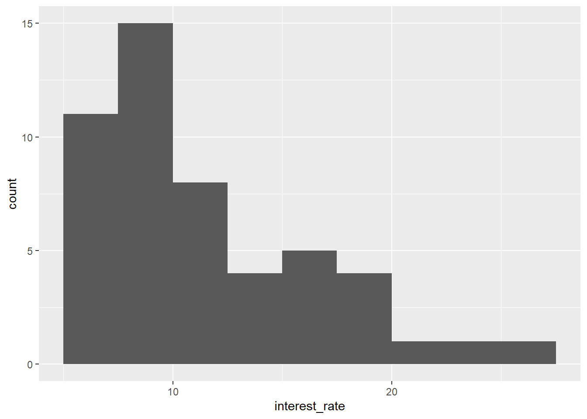
geom_histogram(breaks=seq(5,27.5,by=2.5)-
The option breaks sets exact breakpoints for the bins in the histograms. In this example we set breakpoints from 5 to 27.5 by increments of 2.5 (i.e. the first bin is 5-7.5, the second one 7.5-10, etc.).
8.4.2 Histogram: additional options
data(loan50)
ggplot(data = loan50,
mapping = aes(x = interest_rate)) +
geom_histogram(breaks=seq(5,27.5,by=2.5), colour = "black", fill="grey") +
labs(title = "Histogram of interest rate",
x = "Interest Rate", y= "Count") +
theme_minimal()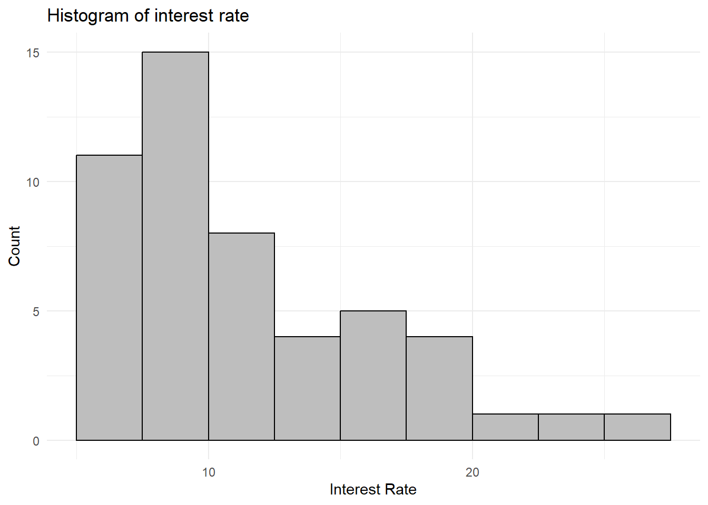
geom_histogram(colour = "black", fill="grey")-
This controls the look and feel of the bars. In this example we add a black border to the bar by setting the
colourand change thefillcolour to grey. labs(title = "Title", x = "x axis title", y = "y axis title")-
This option adds nicer names for the title of the graph, and the titles of the x and y axis.
theme_minimal()-
In order to change the entire look of a graph, you can use the theme_* functions (where in place of star you can add various options, such as
theme_minimal(),theme_classic()ortheme_light().
8.5 Box plot
A box plot summarizes a variable, using five statistics, including the median, Q1 and Q3.
data(loan50)
ggplot(data = loan50,
mapping = aes(x = interest_rate)) +
geom_boxplot()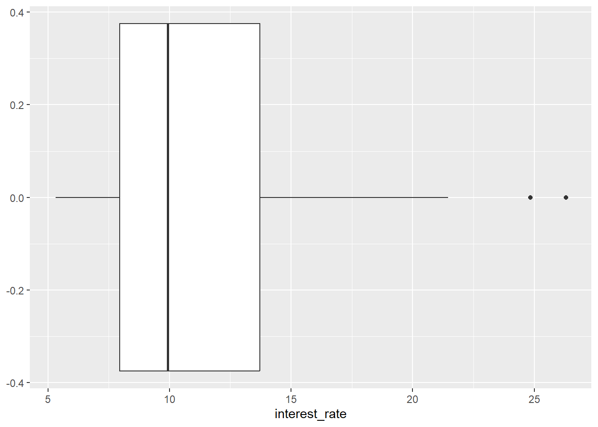
data = loan50-
This bit of code says that the data frame we are using is called
loan50. For your own graph, you would replaceloan50by the name of the data.frame you are using. mapping = aes(x = interest_rate)-
This part of the code says that
interest_rateis the variable we would like to display. For your own graph, you would thus replaceinterest_rateby your own variable. geom_boxplot()-
This tells ggplot2 that we would like to create a boxplot. This produces a basic boxplot.
8.5.1 Box plot: additional options
A box plot summarizes a variable, using five statistics, including the median, Q1 and Q3.
data(loan50)
ggplot(data = loan50,
mapping = aes(y = interest_rate)) +
geom_boxplot(fill = "grey") +
labs(title = "Boxplot of interest rate",
y = "Interest rate") +
theme_minimal() +
theme(axis.text.x=element_blank(),axis.ticks.x=element_blank())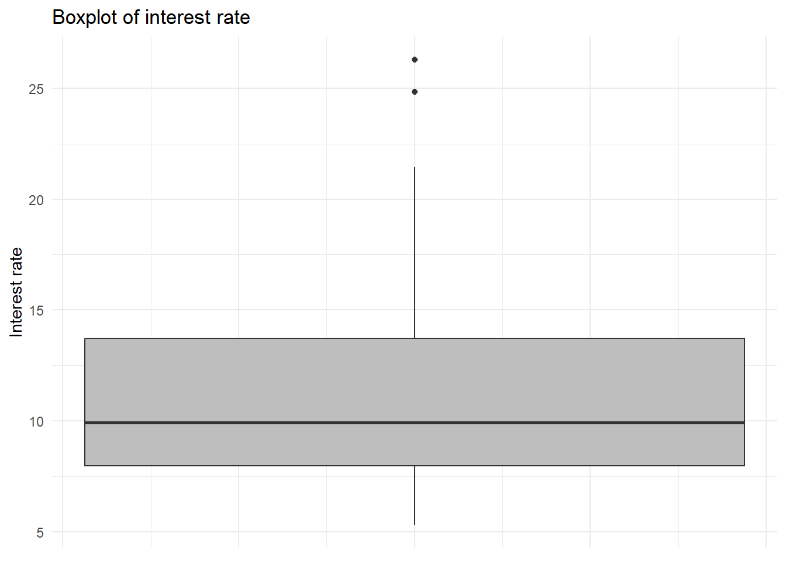
aes(y = interest_rate)-
If we map interest_rate to the y-axis (rather than the x-axis) we change the orientation of the boxplot.
geom_boxplot(fill = "grey")-
The option
fillsets the colour of the boxes. Note that the colour has to be provided in between quotation marks (i.e."grey"). labs(title = "Title", x = "x axis title", y = "y axis title")-
This option adds nicer names for the title of the graph, and the titles of the x and y axis.
theme_minimal()-
In order to change the entire look of a graph, you can use the theme_* functions (where in place of star you can add various options, such as
theme_minimal(),theme_classic()ortheme_light(). theme(axis.text.x=element_blank(),axis.ticks.x=element_blank())-
In order to make sure no labels and ticks are printed on the x-axis we remove them (since these are meaningless).
8.5.2 Box plot: multiple groups
data(loan50)
ggplot(data = loan50,
mapping = aes(x = interest_rate, y = homeownership)) +
geom_boxplot() 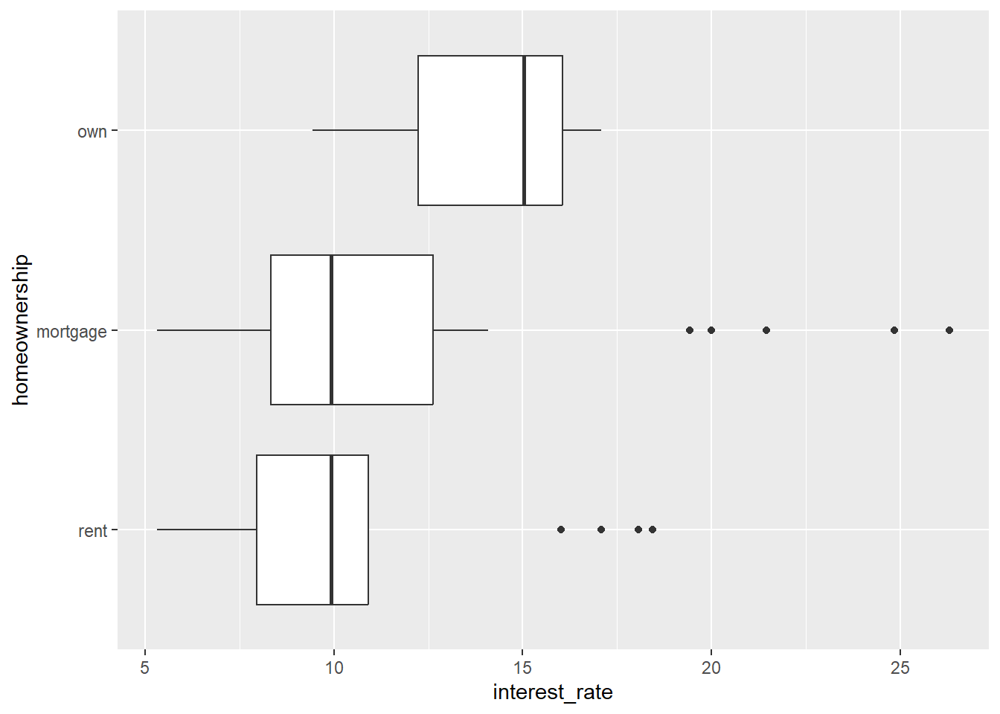
aes(x = interest_rate, y = homeownership)-
In this example we display interest rate by type of home ownership (own, mortgage, rent). Here we map
interest_rateto the x-axis andhomeownershipto the y-axis. Note the second variable (in this casehomeownership) needs to be afactororcharactervariable (i.e. categorical).
8.6 Bar plot
A bar plot can be used to display counts or proportions of categorical variables. You can also use it to display summary statistics (e.g. means) for various groups.
Note that a histogram is used to display frequencies of (binned) numerical (interval-ratio) variables, while a bar plot is used to display frequencies of categorical variables.
data(loan50)
ggplot(data = loan50,
mapping = aes(x = homeownership)) +
geom_bar()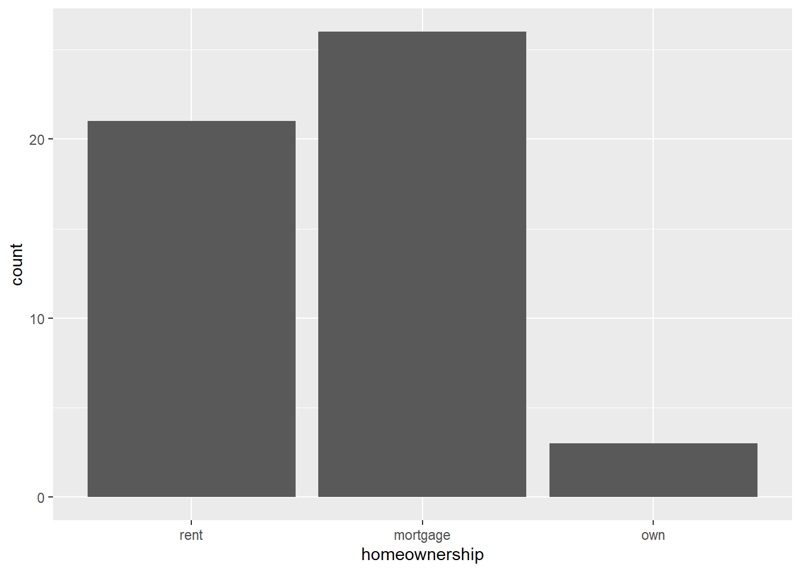
data = loan50-
This bit of code says that the data frame we are using is called
loan50. For your own graph, you would replaceloan50by the name of the data.frame you are using. mapping = aes(x = homeownership)-
This part of the code says that
homeownershipis the variable we would like to display. For your own graph, you would thus replacehomeownershipby your own variable. geom_bar()-
This tells ggplot2 that we would like to create a barplot. This produces a basic barplot.
8.6.1 Bar plot: additional options
data(loan50)
ggplot(data = loan50,
mapping = aes(x = homeownership)) +
geom_bar(fill = "grey", colour = "black") +
labs(title = "Homeownership",
x = "Home ownership type",
y = "Count") +
theme_minimal()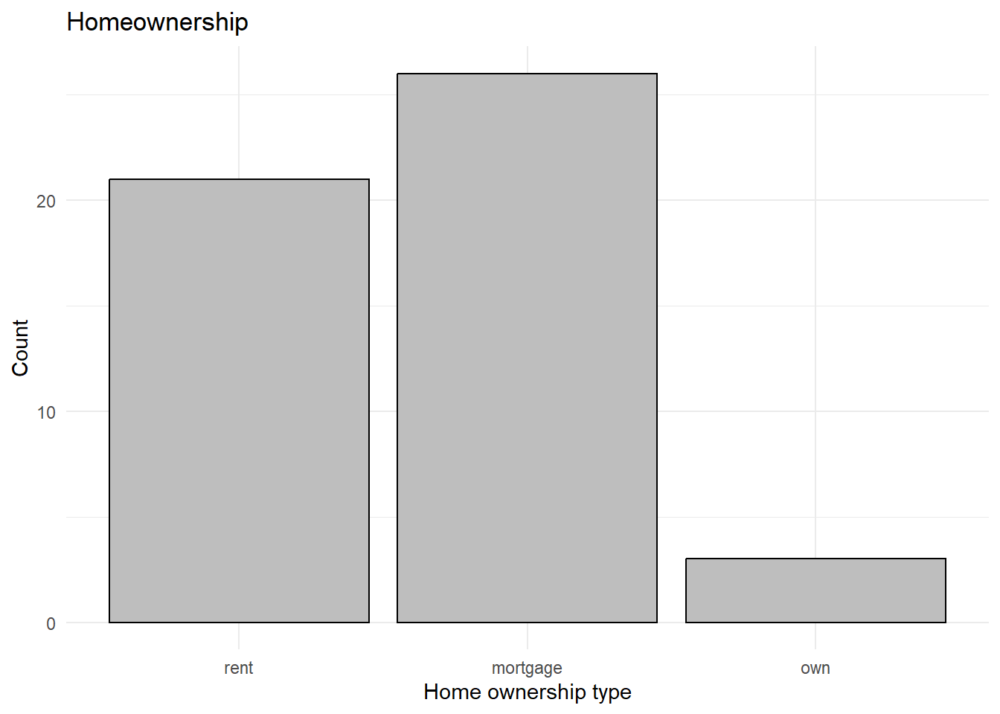
geom_bar(fill = "grey", colour = "black")-
The option
fillsets the colour of the bars andcoloursets the colour of the border. Note that the colour has to be provided in between quotation marks (i.e."grey"). labs(title = "Title", x = "x axis title", y = "y axis title")-
This option adds nicer names for the title of the graph, and the titles of the x and y axis. Note: if you would like to change the way the categories are presented (i.e. ‘Rent’ instead of ‘rent’), you would need to
recodethe variable homeownership. theme_minimal()-
In order to change the entire look of a graph, you can use the theme_* functions (where in place of star you can add various options, such as
theme_minimal(),theme_classic()ortheme_light().
8.6.2 Bar plot: multiple groups
When you have two categorical variables, you can create a bar plot that displays both variables. In the below case we display homeownership and verified_income.
8.6.2.1 Stacked bar plot
data(loan50)
ggplot(data = loan50,
mapping = aes(x = homeownership)) +
geom_bar(aes(fill = verified_income))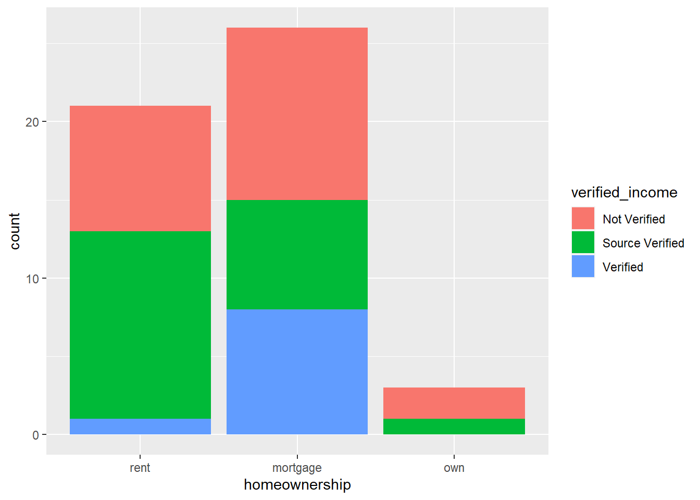
geom_bar(aes(fill = verified_income))-
The option
fill(withinaes) indicates that we want to subdivide each bar by the categories ofverified_income.
Note: if you would like to change the labels in the legend for this graph, the best thing to do is to rename and recode the variable (verified_income).
8.6.2.2 Side-by-side bar plot
data(loan50)
ggplot(data = loan50,
mapping = aes(x = homeownership)) +
geom_bar(aes(fill = verified_income), position="dodge")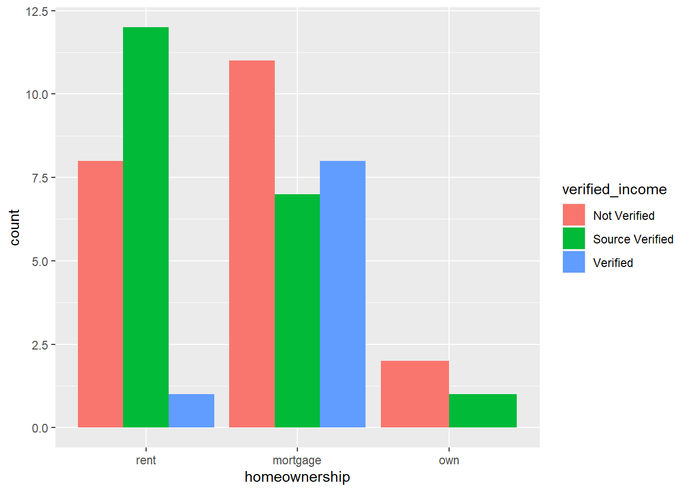
geom_bar(aes(fill = verified_income), position = "dodge")-
The option
fill(withinaes) indicates that we want to subdivide each bar by the categories ofverified_income. We addposition = "dodge"to create a side-by-side bar plot instead of a stacked bar plot.
8.6.2.3 Percent stacked bar plot
This type of bar plot stacks the subcategories, but calculates them as a percentage.
data(loan50)
ggplot(data = loan50,
mapping = aes(x = homeownership)) +
geom_bar(aes(fill = verified_income), position = "fill") +
scale_y_continuous(labels = scales::label_percent()) +
labs(y = "Percentage")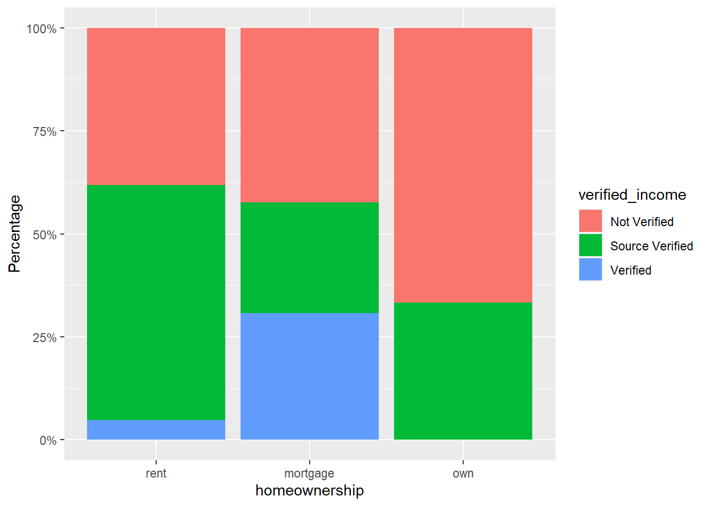
geom_bar(aes(fill = verified_income), position = "fill")-
The option
fill(withinaes) indicates that we want to subdivide each bar by the categories ofverified_income. scale_y_continuous(labels = scales::label_percent())-
This ensures that percentages rather than proportions are displayed on the y-axis.
labs(y = "Percentage")-
To ensure that the y-axis says ‘Percentage’ instead of ‘counts’, we modify the label of the y axis.
8.6.3 Bar plot of means
We can also use bar plots to display statistics (for example means) of a numerical variable for each category of a categorical variable. For example, let’s plot the mean interest_rate per type of homeownership.
First, we need to produce a data frame that shows the mean interest rate per type of home ownership. We can do this using group_by and summarise from the dplyr package. We will discuss these functions later on in the course in more detail. For now it is enough to understand that we are calculating the mean interest rate for each type of home ownership:
data(loan50)
loan50_means <- loan50 |>
group_by(homeownership) |>
summarise(interest_rate = mean(interest_rate, na.rm=TRUE))
loan50_means# A tibble: 3 × 2
homeownership interest_rate
<fct> <dbl>
1 rent 10.8
2 mortgage 11.9
3 own 13.9Using this new data frame loan50_means, we can create a bar plot of these means, using geom_col():
ggplot(data = loan50_means,
mapping = aes(x = homeownership, y = interest_rate)) +
geom_col()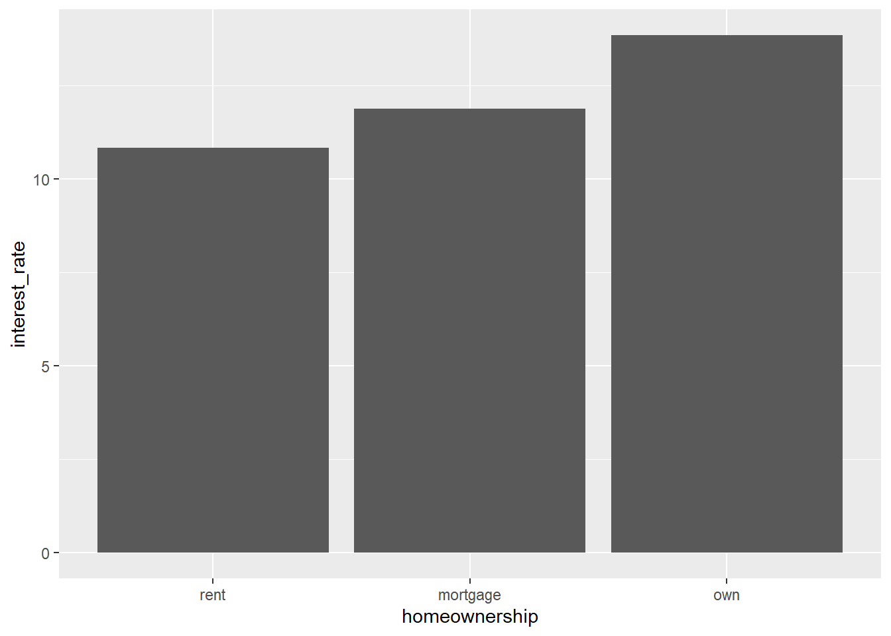
data = loan50_means-
Note that we are using the dataset
loan50_meanshere, which we created above. It contains the meaninterest_rateper type ofhomeownership. mapping = aes(x = homeownership, y = interest_rate)-
This part of the code gives the categorical (x) variable and the numeric (y) variable.
geom_col()-
This tells ggplot2 that we would like to create a barplot where we want to display the values in the data (not the counts per group, as with
geom_bar).
8.7 Describing graphs
When describing graphs, the list below provides some general guidelines for describing the common types of plots and charts.
8.7.1 Dotplot:
- The range of the data.
- The mode(s) of the data.
- The frequency or count of each value.
- The symmetry or skewness of the distribution.
8.7.2 Histogram:
- The shape of the distribution (e.g., bell-shaped, skewed, bimodal).
- The range and frequency of values within each bin.
- The mode(s) of the data.
- Any outliers or unusual patterns in the data.
8.7.3 Boxplot:
- Focus on the summary statistics: The median, quartiles, and range of the data.
- Any outliers or extreme values.
- When displayed for several groups, differences in the distribution of the data between different groups.
8.7.4 Scatterplot:
- The strength and direction of the relationship between two variables.
- Any other visible patterns or trends in the data.
- Any outliers or extreme values.
8.7.5 Barplot:
- The frequency or proportion of data points in each category. variables have no natural order, it does not make sense to discuss the shape for nominal variables.
- Differences in the distribution of the categorical variable between different groups or time periods.
- When a second categorical variable is used (e.g. stacked barplot): Differences in the distribution of the data wiuthin different groups.
- Any patterns or trends in the data. Note: This depends on the variable. As the categories of nominal